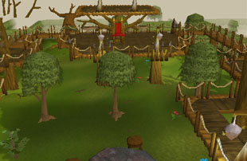
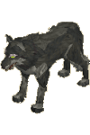

")
Tree Gnome Village and Battlefield (Members)
Introduction

The village itself is protected by means of a cunning maze that delays or entraps would-be invaders, and is littered with a variety of creatures to attack or scare off those who mean to do harm to the village. Like the Tree Gnome Stronghold, the village is built from trees, and most gnomes make their homes above ground in tree houses.
Location

To the north is East Ardougne, where King Lathas rules and has his own personal vendetta against his own brother, King Tyras of West Ardougne.
South and south-east is the quiet town of Yanille, home of the Wizards' Guild.
Points of Interest

The maze protecting the village is also worthy of note, as it contains a number of creatures either deliberately imported to protect the village, or those that have come to search for the delicious gnomes (the delicacies that gnomes indulge in leave them with a tasty flavour, you know).
Personalities

Though the King is a happy gnome normally, the ongoing battle has left his nerves rather frayed. He thinks of little else, but still manages a pleasant greeting for adventurers who happen to wander through the maze.
|

Commander Montai is the supreme commander of the gnome forces on the battlefield. He is a grim soldier with many decades of experience, but this battle has been going so long, and with such a death toll, it may prove too much for him in the end. The recent battle tortoise reinforcements, on the other hand, may well swing the battle for good.
|
|
| King Bolren can be found fretting by the Spirit Tree in the east of the village. | Commander Montai can be found issuing orders in the south of the battlefield. |

The latest addition to the gnome armed forces - the mighty battle tortoises - fall under the command of Lieutenant Schepbur. He takes great pride in his latest charge, and insists on referring to them as the Armoured Tortoise Regiment, even though there are only two currently in active service. This sort of exaggeration is to be expected, though, as the battle tortoises are truly awesome beasts of war.
|

Elkoy is King Bolren's right-hand man, and also guards the entry to the maze. It is his duty to filter those worthy of meeting the King from those unworthy, and to decide who might be a desirable visitor to the Tree Gnome Village.
|
|
| Lieutenant Schepbur can be found ordering his battle tortoises into position in the south of the battlefield. | Elkoy can be found at the north-west entrance to the maze. |
Quests
The following quests can be started in the Tree Gnome Village:
- Tree Gnome Village (Members)
- The Path of Glouphrie (Members)
The Combatants

Just like giant spiders and goblins, giant rats are a common sight. They are slightly tougher than goblins and giant spiders, but that still doesn't say much.
|

The basic grunts of the gnome armies may not be the finest warriors in the land, nor the most terrifying, but they make up for this with numbers. There are always more gnomes waiting to take the place of those that have fallen, so General Khazard must think in increasingly cunning ways to overcome Commander Montai's forces.
|
|
| Giant rats can be found in the maze. | Gnome troops can be found fighting throughout the battlefield. |

The goblins that live above ground are fairly stupid creatures and prone to bickering. As a result, few of them that enter the maze ever manage to either make it to the end or to escape. They are quite harmless to the majority of explorers. |

That General Khazard's soldiers are almost always the superior soldiers means little when they are always outnumbered. These soldiers are much better trained and much stronger than the gnomes they fight, but on the frontlines the gnomes swamp the troopers, bringing them down through sheer weight of numbers.
|
|
| Goblins can be found in the maze. | Khazard troopers can be found predominantly on the north side of the river in the battlefield. |

Hill giants are large and sluggish creatures, but can pack a hefty punch with their massive muscles. If you manage to kill them, it's worth noting that they drop big bones, which are good for boosting your Prayer experience.
|

The Khazard army is large and rigidly structured so that each soldier knows their place. The commanders that walk the battlefield are there not only to issue orders, but to be an example to their men, which is why the commanders must be among the most skilled soldiers at General Khazard's disposal.
|
|
| Hill giants can be found in the maze. | Khazard commanders can be found in the north of the battlefield. |

What could be more terrifying than a terrorbird? A terrorbird with a gnome on top! These cavalry soldiers are among the finest soldiers the gnomes can muster, and lead their charges into battle armed with spears or bows to decimate their enemies. Mounted terrorbird gnomes can also be killed for Slayer experience.
|

Ogres aren't terribly intelligent, so there's little risk that they will ever make it through the maze. Their appetite for large, tasty things will keep them trying, though, and maybe one day, in the far future, one will actually make it.
|
|
| Mounted terrorbird gnomes can be found charging into combat throughout the battlefield. | Ogres can be found in the maze. |
|

Wolves, like ogres, come to the maze to hunt out the delicious scent of plump gnomes. The maze confuses these blood-maddened beasts, though, and they remain trapped and unable to reach the prey they so desire.
|

Once placed in the command of Lieutenant Schepbur, the battle tortoise becomes a living machinery of destruction. These lumbering beasts are the perfect platform for the gnomes to take the battle to the enemy, blasting them with magic and arrows, as well as the tortoise's own fearsome attacks.
|
|
| Wolves can be found in the maze. | Battle tortoises can be found in the south of the battlefield, waiting for the order to assault the Khazard stronghold. |
Miscellaneous
- Once you have completed the Tree Gnome Village quest, you will be able to use the Spirit Tree Network to teleport quickly across RuneScape.
- Once you have started the Tree Gnome Village quest, Elkoy will happily guide you through the maze to the village, saving you a great deal of time.
- If you have lost Glarial's pebble, from the Waterfall Quest, you can get it back by returning to the cave beneath the Tree Gnome Village.

More articles in
Cities and Towns
|
|